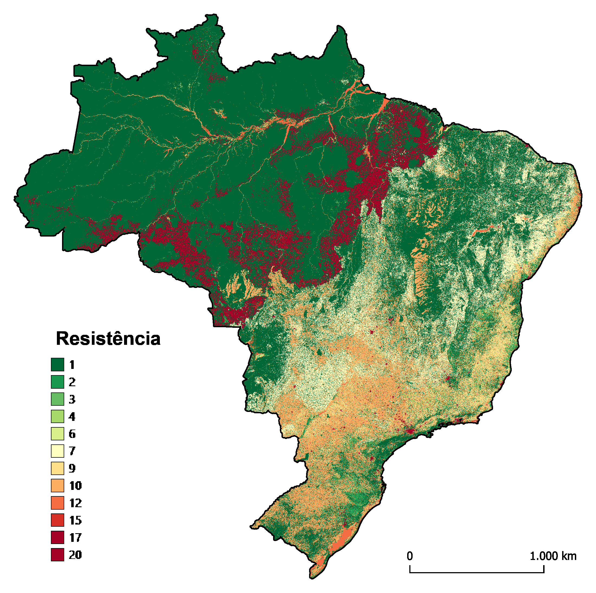

Conectividade local
Cálculos de resistência
Os valores de resistência são medidas relativas do grau de dificuldade de deslocamento dos organismos nos diferentes tipos de cobertura do solo. Esses valores foram atribuídos por bioma, seguindo a premissa de que quanto maior for a diferença estrutural entre um dado tipo de cobertura do solo e a vegetação original do bioma, maior será o valor de resistência da classe de cobertura do solo em questão.
Os dados espaciais primários utilizados para calcular a superfície de resistência foram a camada de cobertura do solo gerada pelo MapBiomas (MapBiomas Project 2020) e a base de estradas pavimentadas e não pavimentadas fornecida pelo IBGE (BCIM250, ano 2021). Em um segundo momento, serão ainda inseridas bases de dados de infraestrutura energética, a serem incorporadas nessa camada.
A superfície de cobertura do solo do MapBiomas foi reamostrada para gerar pixels com 90 m de tamanho, aproximadamente. Também convertemos o arquivo vetorial de estradas para o formato matricial, com pixels de tamanho aproximado de 90 m. Conjugamos, por álgebra de mapas, as bases matriciais do MapBiomas e de estradas, de tal maneira que todos os pixels da base do MapBiomas que se sobrepuseram a um pixel de estrada assumiram um novo valor correpondentes a um pixel de estrada pavimentada ou não pavimentada.
Os pixels do mapa consolidado de cobertura do solo, já incluindo as estradas pavimentadas e não pavimentadas como novas classes, receberam, separadamente por bioma, valores de resistência que buscaram traduzir, comparativamente entre as classes, o grau de dificuldade de movimentação da biodiversidade numa dada classe de cobertura do solo. Os valores de resistência dos pixels de cada uma das classes foram atribuídos, por bioma, pela equipe do Projeto e podem ser vistos na Tabela 1.
| Classe de cobertura do solo | Amazônia | Caatinga | Cerrado | MataAtlântica | Pampa | Pantanal |
|---|---|---|---|---|---|---|
| Aquaculture | - | 10 | 7 | 7 | 7 | - |
| Beach, Dune and Sand Spot | 2 | 2 | 2 | 2 | 2 | - |
| Citrus | - | - | 10 | 10 | - | - |
| Coffee | - | 7 | 10 | 10 | - | - |
| Cotton | 7 | 7 | 10 | - | - | - |
| Estradas não pavimentadas | 10 | 10 | 7 | 10 | 7 | 7 |
| Estradas pavimentadas | 20 | 20 | 20 | 20 | 20 | 20 |
| Forest Formation | 1 | 1 | 1 | 1 | 1 | 1 |
| Forest Plantation | 7 | 2 | 7 | 3 | 10 | 5 |
| Grassland | 2 | 1 | 1 | 2 | 1 | 1 |
| Herbaceous Sandbank Vegetation | - | 1 | - | 2 | 1 | - |
| Mangrove | 1 | 1 | 1 | 1 | - | - |
| Mining | 20 | 20 | 20 | 20 | 20 | 20 |
| Mosaic of Uses | 7 | 7 | 10 | 10 | 10 | 10 |
| Other non Forest Formations | - | - | - | 7 | - | - |
| Other non Vegetated Areas | - | 9 | 10 | 10 | 10 | 10 |
| Other Perennial Crops | 7 | 7 | 10 | 10 | - | - |
| Other Temporary Crops | 15 | 7 | 10 | 10 | 10 | 10 |
| Pasture | 15 | 7 | 5 | 9 | 5 | 7 |
| Rice | - | - | 10 | 10 | 10 | - |
| River, Lake and Ocean | 2 | 5 | 5 | 5 | 5 | 2 |
| Rocky Outcrop | - | 1 | 2 | 2 | 2 | - |
| Salt Flat | 2 | 1 | 2 | 2 | - | - |
| Savanna Formation | 2 | 1 | 1 | 2 | - | 2 |
| Soybean | 15 | 10 | 10 | 10 | 10 | 10 |
| Sugar cane | 15 | 10 | 10 | 10 | - | 10 |
| Urban Area | 20 | 20 | 20 | 20 | 20 | 20 |
| Wetland | 1 | - | 1 | 1 | 1 | 1 |
| Wooded Sandbank Vegetation | - | 1 | - | 1 | 1 | - |
Depois de atribuídos os valores de resistência, aplicamos à superfície gerada a função kernel de decaimento linear. Esta análise considerou, numa janela móvel de 23 pixels (~2070 m), o contexto espacial em que cada pixel está inserido, reconhecendo que pixels mais próximos possuem uma influência maior que os mais distantes. Desta maneira, a função kernel nos auxilia na tarefa de encontrar os melhores caminhos de deslocamento na paisagem, ou seja, aqueles caminhos que oferecem menor resistência.
